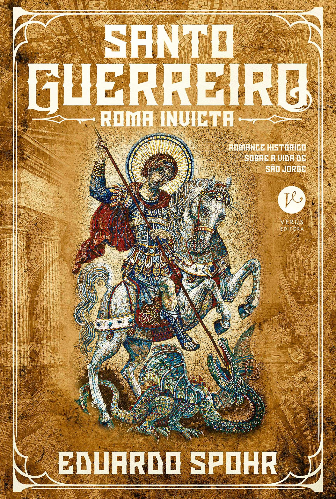

Espadachim de Carvão
[Mostrar descrição]
Como um bom livro de A√ß√£o e Aventura, com grande foco na a√ß√£o, nada melhor do que uma boa trilha sonora de Rock ü§ò. A recomenda√ß√£o da casa √© o álbum "Space Rider", da banda ficcional Star-Lord. Criado para o jogo Marvel's Guardian of The Galaxy (2021), o álbum cumpre seu papel com letras simples e muita guitarra ‚Äî tudo que voc√™ precisa pra entrar na vibe de enfrentar perigos em Kurgala com suas espadas g√™meas.

Caixa de pássaros
[Mostrar descrição]
Casa de Pássaros, ou BirdBox para os íntimos, tem uma pegada muito única, aliando a tensão do suspense com a calmaria do mundo pós apocalipto. Uma tensão que existe por conta da estranheza do amanhã e do total desconhecimento do que causou o terror e acabou com o mundo que conhecemos, porém, em contrapartida, tem-se também uma enorme calmaria por conta desse fim de mundo, apesar dos problemas não há uma agressividade, como nas histórias de apocalipse zumbi, aqui o mundo permanece numa inércia de calmaria e desconhecimento. Dessa forma cria uma sensação muito única durante sua leitura, sensação essa que também consegue ser atingida com o álbum Pearl, de Rubel. Com foco especial para a faixa O Velho e o Mar, que faz referência ao livro de mesmo nome que também possui esse astral de tensão e calmaria graças à sua relação com o mar, consegue estabelecer o clima que o livro precisa. Com a união de letras simples e melodias levemente melancólicas o álbum do cantor carioca consegue estabelecer a sensação de calmaria e tensão pelo mistério que canto combina com a obra
O Auto da Compadecida
[Mostrar descrição]
Originalmente escrito como peça e posteriormente sendo adaptado para livro, depois mini-série e então filme O Auto da Compadecida é possivelmente o maior clássico da histório do país e, com certeza, o maior clássico da histório da região Nordeste. Como grande representante da sua região, por conta das hitórias, dos esteriótipos de personagens e da linguagem, a obra do Paraibano Ariano Suassuna não poderia ter uma trilha sonora diferente: Domiguinho, Álbum do Pernambucano João Gomes, em parceria dos cantores Mestrinho e Jota.pê. O álbum possui o puro suco da música Nordestina trazendo sucessos novos e antigos da região, contendo desde canções autorais dos artistas até clássicos de lendas regionais como Kara Véia, a obra consegue te transportar para o interior e alinhar com o astral do livro.

Santo Guerreiro
[Mostrar descrição]
O Santo Guerreiro, livro brasileiro, escrito pelo carioca Eduardo Spohr, o livro conta a história da lenda de São Jorge. Com a história de Gergios, um grego aspirante à soldado romano, a playlist da vez foi montada para tal. A playlist Graco, sobrenome do protagonista do livro, desenvolvida para a leitura do livro busca atingir a sensação da vida do persongaem com músicas feitas para São Jorge e com instrumentos que remetem ao tempo e local, tendo em vista que o livro se ambienta na Roma e Grécia por volta do século 3 A.C; Importante relembrar que o intuito da playlist e do livro não é ação ou aventura, e sim, te ambientar na formação do homem que gerou a Lenda de São Jorge, o santo guerreiro, então o foco da narrativa é tratar da ambientação do local mas principalmente do crescimento pessoal do protagonista vivendo experiências que formaram se caráter e espírito forte.